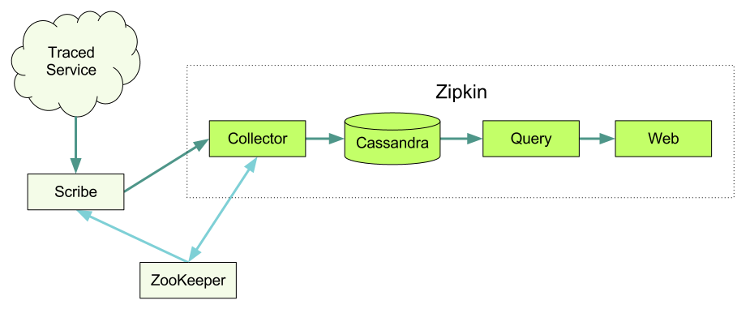

Architecture¶
These are the components that make up a fully fledged tracing system.
Instrumented libraries¶
Tracing information is collected on each host using the instrumented libraries and sent to Zipkin. When the host makes a request to another service, it passes a few tracing identifers along with the request so we can later tie the data together.

We have instrumented the libraries below to trace requests and to pass the required identifiers to the other services called in the request.
Finagle¶
Finagle is an asynchronous network stack for the JVM that you can use to build asynchronous Remote Procedure Call (RPC) clients and servers in Java, Scala, or any JVM-hosted language.
Finagle is used heavily inside of Twitter and it was a natural point to include tracing support. So far we have client/server support for Thrift and HTTP as well as client only support for Memcache and Redis.
To set up a Finagle server in Scala, just do the following. Adding tracing is as simple as adding finagle-zipkin as a dependency and a tracer to the ServerBuilder.
ServerBuilder()
.codec(ThriftServerFramedCodec())
.bindTo(serverAddr)
.name("servicename")
.tracer(ZipkinTracer.mk())
.build(new SomeService.FinagledService(queryService, new TBinaryProtocol.Factory()))
The tracing setup for clients is similar. When you’ve specified the Zipkin tracer as above a small sample of your requests will be traced automatically. We’ll record when the request started and ended, services and hosts involved.
In case you want to record additional information you can add a custom annotation in your code.
Trace.record("starting that extremely expensive computation")
The line above will add an annotation with the string attached to the point in time when it happened. You can also add a key value annotation. It could look like this:
Trace.recordBinary("http.response.code", "500")
Ruby Thrift¶
There’s a gem we use to trace requests. In order to push the tracer and generate a trace id on a request you can use that gem in a RackHandler
For tracing client calls from Ruby we rely on the Twitter Ruby Thrift client. See below for an example on how to wrap the client.
client = ThriftClient.new(SomeService::Client, "127.0.0.1:1234")
client_id = FinagleThrift::ClientId.new(:name => "service_example.sample_environment")
FinagleThrift.enable_tracing!(client, client_id), "service_name")
Transport¶
We use Scribe to transport all the traces from the different services to Zipkin and Hadoop. Scribe was developed by Facebook and it’s made up of a daemon that can run on each server in your system. It listens for log messages and routes them to the correct receiver depending on the category.
Zipkin Collector¶
Once the trace data arrives at the Zipkin collector daemon we check that it’s valid, store it and the index it for lookups.
Storage¶
We originally built Zipkin on Cassandra for storage. It’s scalable, has a flexible schema, and is heavily used within Twitter. However, we made this component pluggable, and we now have support for Redis, MySQL, PostgreSQL, SQLite, and H2.
Zipkin Query Service¶
Once the data is stored and indexed we need a way to extract it. This is where the query daemon comes in, providing the users with a simple Thrift api for finding and retrieving traces. See the thrift idl.
Web UI¶
A GUI that presents a nice face for viewing traces. The web UI provides a method for viewing traces based on service, time, and annotations. Note that there is no built in authentication in the UI.